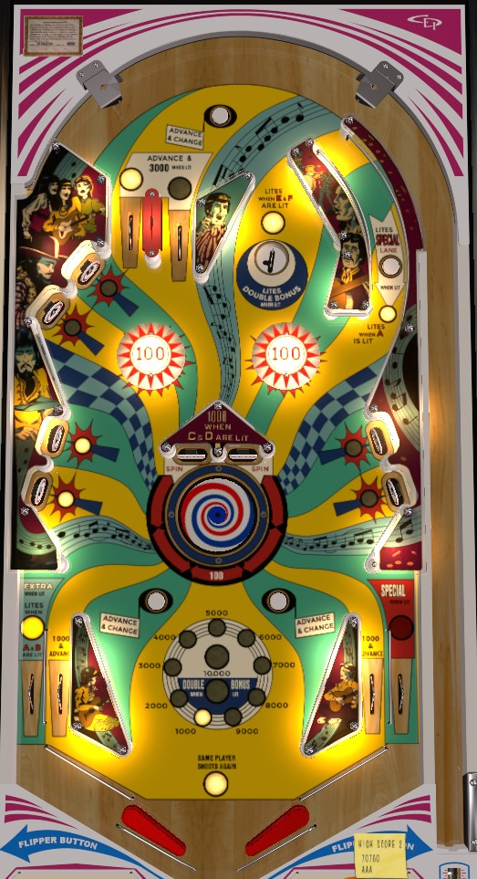

Juke Box is the 4 player version. Sound Stage is the 2 player version. The two versions have identical rules and scoring.
Collect letters from standup targets to light features around the table. A and B lights the left out lane for extra ball. C and D lights the spinners in the center for 1,000 per spin. E and F lights the top saucer for double bonus. Bonus is advanced by in lanes and Advance and Change rollover buttons. The right orbit back to the table is excessively narrow and unreliable; shoot the A target and hope for a ricochet off the bumpers to land in the double bonus saucer. If bonus is high and doubled, light the spin targets in the center and hit them as much as possible.
A plunge can end up in 4 places; the two top lanes, the saucer area, or the right orbit. Top lanes score 1,000 points, or 3,000 and a bonus advance when lit; one of the two is always lit, alternating each time an Advance and Change rollover button is pressed. The saucer scores 500 points; if it is lit (by collecting E and F from the standup targets), it scores 3,000 points and Double Bonus. The right orbit contains a rollover button that lights when the A is collected; when lit, this button lights the right out lane for Special.
A and B are in the upper left; E and C are at the middle left; D and F are at the middle right. Standup targets always score 1,000 points. Hit a standup target to light it.
The two targets labelled Spin in the center of the playfield cause the pinwheel in the playfield to spin. Each half-turn that the turntable makes score 100 points, or 1,000 if both C and D are lit. Hitting the Spin targets multiple times in quick succession allows the pinwheel to spin at higher speeds than would be possible with a single target hit. The Spin targets are very dangerous, but they're still a great source of points when lit, especially if the bonus cannot be advanced any further.
Juke Box has a conventional in/out lane setup. In lanes score 1,000 points and a bonus advance. Out lanes score 1,000 points and can be lit for extra ball (left) or Special (right) as described above.
Bonus is advanced by the lit top lane, any in lane, and any Advance and Change rollover button around the playfield. You are not given any bonus for free, and it is possible to drain with 0 points in bonus. Double bonus is earned by lighting E and F, then making the top saucer. Max bonus is 2x 19,000 = 38,000 points, which is a very large part of game scoring. There is no mid-ball bonus collect and there is no bonus holdover of any kind. Double bonus is never given for free. Tilt ends the ball in play only.